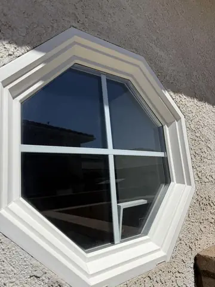
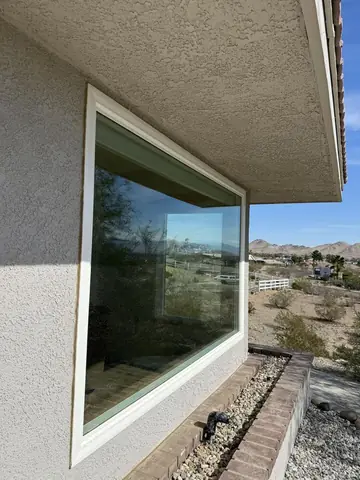
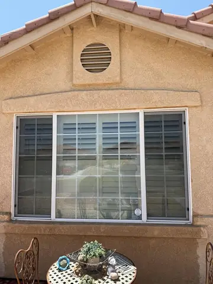
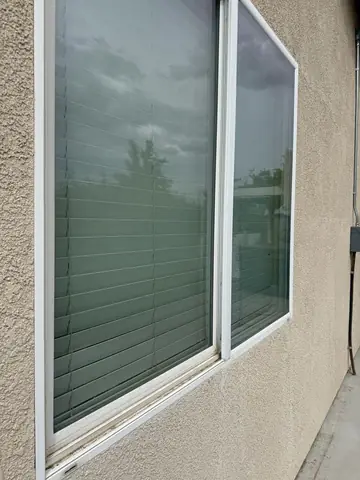

Home/Hard Water Removal/Hard Water Stains
Serving Hesperia and the High DesertHard Water Stains on Windows
Where the white spots come from, which stage yours are at, and what a normal clean will not touch. One pane tested free.
The cloudy band along the bottom of a window, always on the side that faces the lawn, is not dirt. It is minerals from sprinkler water that dried on the glass, one cycle at a time, until they bonded to it. Windex will not move it and neither will a regular window cleaning. Here is what will.
Why it happens more up here
High Desert water is hard, and sprinkler heads on a windy morning throw it onto the glass a few feet away. Every cycle leaves a film of calcium and magnesium as the droplets dry. In summer the glass is hot, the water evaporates in minutes, and the minerals bake on before anyone sees them.
It shows up on the same windows in every neighborhood: the ones by the lawn in Spring Valley Lake, the course side homes at Hesperia Golf and Country Club, the front windows behind a parkway strip in Victorville. Drip irrigation homes almost never get it.
Which one yours is at
Stage one: surface film
A haze you can feel with a fingernail. It comes off in a normal cleaning with the right technique and a little more time. If your windows are here, book a window cleaning and it is handled.
Stage two: bonded spots
White rings that stay after a wash. The minerals have bonded to the glass and need a restoration compound worked in by hand, pane by pane. This is the $12 a pane work, and it comes off.
Stage three: etching
The minerals have eaten into the surface. Polishing brings back most of the clarity but not all, because the glass itself is pitted. We test a pane first and tell you honestly what to expect.
How we take it off
A restoration compound is worked into the glass by hand with a pad, pane by pane, then rinsed with purified water and squeegeed. It is slow work and it is priced that way: from $12 a pane, added to an exterior window clean. Before you pay for anything we treat one pane free so you see the result on your own glass.
Then the cause has to be fixed or the spots come back. Usually it is one sprinkler head turned two inches. We point out which one.
What hard water removal costs
From $12 a pane on top of the window cleaning, and only the panes that need it. A typical home has four to eight affected panes, so the add on is usually $48 to $96. One pane tested free first, every time. Book on our website and the visit is 10% off.
Mention the panes needing restoration in your service request. Tony confirms the combined window-cleaning and restoration scope.
Select your service
Tell Tony what you need and request a preferred date. Final scope, price and appointment are confirmed personally.
Read our Google reviews · Free inspection · Satisfaction guaranteed
Interested in seeing window cleaning we've done?
Photos from our own jobs, with the town on each one we know. Tap one to see it bigger.

Hesperia · Octagon window
Apple Valley · Corner picture window Spring Valley Lake · Upstairs glass from the ladder
Spring Valley Lake · Upstairs glass from the ladder
Phelan · Back patio window Hesperia · Slider, glass and track
Hesperia · Slider, glass and track
Adelanto · Slider on stucco


Like what you see? Request your service below.
Tell Tony what your property needs
Choose one or more services and a preferred day. Tony confirms the scope, final price and appointment personally. No payment is taken here.
Hard water stain questions
Will a regular window cleaning remove hard water stains?
Surface film, yes. Bonded white spots, no. Those need a restoration compound worked in by hand, which is separate work priced by the pane. We test one pane free so you know which stage you are at before spending anything.
Can hard water stains be removed completely?
Stage one and two, yes. Stage three, where the minerals have etched the glass, polishing brings back most of the clarity but the pitting stays. We show you on the test pane and you decide.
What causes the spots on my windows?
Sprinkler overspray. Hard water dries on hot glass, leaves minerals behind, and every cycle adds a layer. It is almost always the windows nearest a lawn or a parkway strip, and it almost never happens on drip irrigation homes.
How much does it cost?
From $12 a pane, added to an exterior window clean, and only for the panes that need it. Most homes are four to eight panes. One pane is tested free first.
How do I keep it from coming back?
Adjust the sprinkler head that reaches the glass, usually one or two of them, or switch that zone to drip. We point out which heads are hitting the windows while we are there.